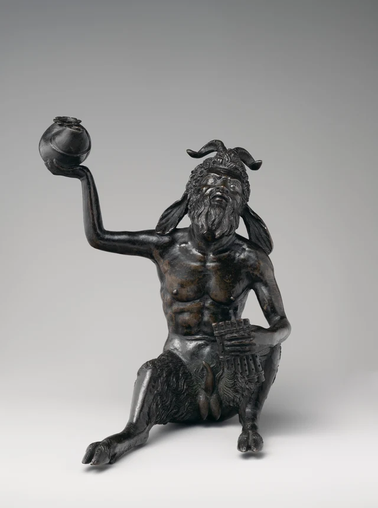
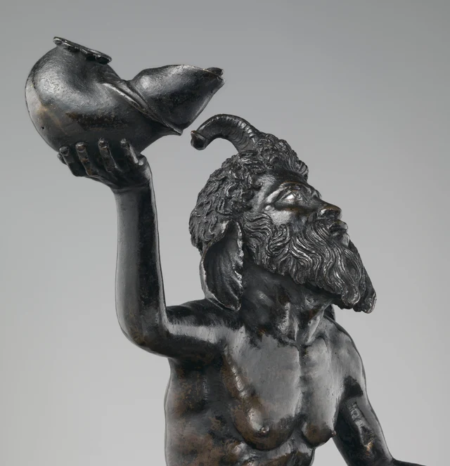
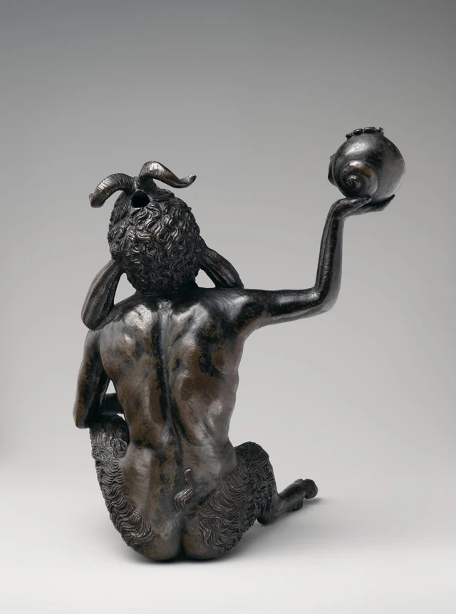

まず、掲げた手を見よう。
手のひらは上を向き、丸く膨らんだ容器の下から四本の指が伸びている。前腕は上へ、上腕は外へ向かい、肘がその線を大きく折り返す。容器は頭の上近くまで運ばれているが、頭に乗ってはいない。曲がった角との間には灰色の背景が残る。話をここまで進めたところで、わざと少し間を置くようだ。
下には、角があり、耳を垂らし、ひげを生やした姿が座っている。胸と腹は人間のようで、太ももは巻いた毛に覆われ、足先は蹄に割れる。顔を上げ、目には周囲の金属と違う明るい色が二つある。もう一方の手は、一組のパンパイプを身体のそばに押さえている。

掲げたものは油灯だ。それが分かると、姿勢にはもう一つの関係が加わる。私たちは彼を見ることも、彼が支える灯りで別のものを見ることもできる。彫刻は視線がとどまる終点だけでなく、作品の外へ視線を届かせる助けにもなりうる。
サテュロスは古典神話の野山の世界に属し、酒神の一行、酒、音楽と結びついている。ルネサンス期には、古代の像や浮彫がこうした小型彫刻の姿の手がかりとなった。パンパイプにも牧歌的な音楽の連想がある。これらは彼を見分ける助けになるが、目の前の動作を特定の神話の一場面と解釈する必要はない。Metの関連主題研究
一 灯りを掲げる手が身体を開く
容器から肩へ目を移そう。
右腕が外へ開いても、胸はそれにつられて横倒しにならない。胸は広く、腹は細まり、その下で二本の脚が両側へ散る。上半身で最も高く、中央から最も外れたものは灯りで、下の最も幅広い部分は伸びた脚と座った身体でできている。すべてを中心に集めた、密な塊を見ているのではない。
とくに右腕の内側を見たい。肘の大きな曲がり、肩に垂れた耳、頭の外縁が、背景をいくつもの異なる形の隙間に切り分ける。腕が外へ伸びるほど、灯りは身体から独立して見える。ひげや巻き毛を通り抜けなくても、手首をたどれば灯りの輪郭に届く。
左側は、反対に込み合っている。パンパイプは横向きに指で押さえられ、下は毛深い太ももに近く、上は腹へつながる。曲げた腕がそれを身体の近くに収める。同じく物を持ちながら、一方は開き、一方は閉じる。灯りは広い場所を得て、楽器は身近に置かれ、いつでも注意を向けられる物のようだ。
この違いは「掲げる」という理解にも影響する。前腕だけなら、単に持ち上げる動作と呼べる。もう一方の手まで見ると、二つの物には異なる見せ方の条件が与えられていると分かる。灯りは輪郭の外へ突き出され、パンパイプは内側に残る。一方は周囲の空間に働きかけ、もう一方はこの姿が何者かをとどめている。
外へ伸びた灯りには、使用者が胴全体を越えずに身体の脇から口へ近づける。掲げた腕が残す空間は、灯りを見やすくするとともに、近づくための場所にもなる。
二 一つの口が、容器の読み方を変える
全身写真では、掲げた容器は暗い球に近い。美術館の頭部と肩の接写に移ると、急に長くなる。

容器の胴は広く丸く、口は前へ突き出し、その間には斜めに下る折れ線がある。後方上部の広い口縁は滑らかな円ではなく、縁に起伏がある。先端はずっと小さな開口部へ絞られる。下には四本の指が並び、指先の高さはそれぞれ違い、器物全体を包み込んではいない。
この細部が「一つの球」を、中にものを収め、外へ通じる構造へ分けていく。内部が見えなくても、閉じた量感と内部へ通じる口は区別できる。ただし黒い穴一つで用途を決めることはできない。開口部の大きさ、位置、前へ伸びる口を合わせて見る必要がある。
美術館の研究はこれを油灯と特定し、細くなる部分には灯芯用の溝があるとする。機能の研究 その説明を知って尖った口を見ると、目のとどまる場所が変わる。先ほどは丸さと尖りを比べていたが、今は液体がどこにたまり、芯がどこから出るかも探す。用途の理解が鑑賞に入ったのであって、写真に炎が現れたわけではない。
図2では灯具の口もサテュロスの鼻も画面右へ突き出すが、一本の線にはつながらない。灯具は上、顔は下で、間には角と背景がある。器物と頭は同時に見えながら、それぞれの輪郭を保つ。この配置により、「頭から灯具が生えている」よりも「彼が灯具を掲げている」とはっきり分かる。手が二者を結び、同時に距離も残している。
全身写真は灯具を丸い形に圧縮し、接写は前へ伸びる口を開いて見せる。二つの角度が互いを修正し、唯一正しい一枚の写真をつくるわけではない。同じ器物の丸みと突き出しが、回り込むにつれて交互に目立つことを教えてくれる。機能はとくにその突き出した部分に依存するが、最初の一目では丸い胴しか見ないことも多い。
三 銀の目が視線を引き戻す
目を見てから、頬を見よう。
図2では額、鼻筋、胸にも明るい場所がある。金属の反射は目だけに起きてはいない。だが頬の明るさは膨らんだ表面に沿って面として広がるのに対し、目の淡い色はまぶたに囲まれ、内側には小さな円形の表現も見分けられる。その位置はきわめて具体的だ。
そのため、二種類の明るさは少し違う。胸の明るい面は量感を感じさせ、目の明るさは一つの向きへ結びつけられやすい。眉の骨が上に暗い縁をつくり、その下から目が現れる。鼻は上がり、唇は開き、ひげは口元から下へ幾束もの波に分かれる。何かに注意を向けているように感じられるが、写真にはその対象がない。
その埋められていない場所こそ、残しておきたい。
灯具は右手にあるが、顔を下げて点検してはいない。パンパイプも口へ運んでいない。器物はそれぞれの位置にありながら、動作は私たちを「今、操作している」という一瞬に閉じ込めない。腕に沿って灯具を見上げ、銀の目に顔へ引き戻され、その顔の向きがさらに写真の外を指すと気づける。
こうして作品は、二種類の外の空間を生む。灯具の用途からは、周囲の照らす必要のある場所を思い、顔の向きからは、見つめられているかもしれない場所を思う。この二つの空間は交わりうる。灯りがどこまで届くかを気にしたかと思うと、彼がどこを見ているのか知りたくなる。
四 裏へ回ると、灯具は顔の添え物ではなくなる
背後へ回ると、目は消えるが、灯具は残る。

背中の中央には下へ伸びる溝があり、左右の隆起は完全には同じではない。腕を掲げる側では肩が外へ伸びる上腕につながり、もう一方の腕はより早く下へ向かって胴のそばに退く。肩と背中の左右の違いが、同じ動作を背面へ運ぶ。姿勢は正面で見える胸にとどまらない。
下へ見ると腰が細まり、短い尾が小さな鉤をつくる。灯具や角の大きな輪郭と比べると、尾は見落としそうなほどだ。周囲の肌は比較的滑らかで、そこから両脇へ行くと密な毛の模様に入る。身体は頭から足まで同じ模様で覆われてはいない。尾の周りの空いた面があるから、小さくても見分けられる。
背面では、灯具の胴の渦巻き状の隆起も見える。正面では簡潔だった器物に、ここでは巻き巡る表面がある。顔の脇の小道具とだけ見れば、この面の造形は「裏にも細部がある」の一言で済みやすい。けれども実際に裏へ回ると、灯具はやはり輪郭の外へ伸びた手にあり、最初に見る主な量感の一つであり続ける。正面から人物を引き立てるだけでなく、自らの周囲を占めている。
この角度は見る習慣を一つ変える。顔のある側を作品が語りかける場所とし、ほかの面を補足と考えがちだ。しかしここでは、表情をしばらく読まず、背中、肩、肘、手首、容器の胴へ続く関係だけを見られる。灯具は位置を失わず、掲げる動作全体も成り立つ。作品を使える器物と見ることも、正面の肖像に注を一行加えるだけではない。
五 彼を借りて別のものを見るとき、まだ彼を見ているのか
この作品は高さ約23センチしかない。写真で銀の目やひげを拡大するときには、灯具も作品全体とともに小さいことを思い出したい。画面が与える接近の機会は、もともと大型の照明器具ほどの寸法があったということではない。
油灯の機能から、限定的に使い方を想像してみることはできる。油を入れ、芯を置いて使うとき、注意はサテュロスにとどまり続けなくてよい。使う人は照らされたものを気にするかもしれない。読書、宴、音楽を聴くことのどれかは指定しない。その具体的な活動は、3枚の写真では証明されていないからだ。
しかし注意が移っても、彫刻の姿が消えるわけではない。伸ばした手が灯具を胴から離し、口が機能を可能にする。使うことに関わるその配置は、先ほど形を鑑賞しながらたどった場所でもある。用途は作品の裏に別に隠れるのではなく、同じ手、同じ口、同じ距離を通じて現れる。
逆に、その姿も器物の理解を変える。灯具を台に置けば「台が灯具を支える」と言うだろう。開いた手のひらを見ると、「彼が灯りを掲げる」と言いたくなる。同じ支える関係が、身体の言葉によって組み直されている。
最も興味深い往復はここにある。灯りが必要なら、目は彫刻を越えて周囲のものを探す。再び鑑賞するときは、その使用を可能にした姿勢へ戻る。灯具は外へ目を向けさせ、銀の目は引き戻し、手のひらはずっと器物と姿の境界にある。
彼が掲げるものは、身体から勝手に取り去れる名札ではない。灯具は身体が外へどう開くかを決め、見ることが身体の周りだけで終わらないようにもする。この小さな彫刻は「一つのものを見る」と「一つのものを使って見る」を、同じ動作の中に置いている。
さらに読みたい人へ：SAEでもう一歩問う
使える油灯だと知ったあと、「役立つ設計だから」と急いで美しいと宣言してしまわないだろうか。
まず二つの判断を、それぞれ最後まで述べてみよう。機能の判断では、容器に油がためられるか、芯をどう置くか、安定して置けるかを問う。鑑賞の判断では、なぜこの開いた手、この外へ伸びる腕、灯具と頭との距離が、繰り返し見るに値するものにするかも説明したい。前者には機能と技術の証拠が必要で、後者は目の前の具体的な関係へ戻らなければならない。
二組の問いは出会うが、互いの代わりには答えられない。私たちはこの灯具を実測・試験していないので、形が好きだからと使用性能を保証はできない。同様に、ある灯具が確実に働いても、「明かりがつく」と言うだけでは、なぜ見飽きないかは説明できない。この作品で用途が重要なのは、輪郭と見ていた口や距離に、別の理解できる関係があると気づかせる点だ。
ここまで読んだら図1へ戻り、形だけを見てから、「油灯」という知識を持ってもう一度見よう。どこの形は変わらないのに、注意の位置が変わっただろう。それは作品全体に「用の美」の点数をつけるより、説明するに値する変化だ。
SAE（Self-as-an-End）美学総論は、美と有用性を明確に区別し、背景自体も美の構成部分だとする。本稿はこの区別から問いを立てているのであって、器物が働くことを美しさの証明にはしない。SAE美学総論、第3節
画像と資料について
Metの基本情報欄には現在もリッチョ（Andrea Briosco, called Riccio）とある。一方、同じページの2022年の研究では、身体は彼の原型に由来し、後継の彫刻家が仕上げた可能性、または仲間や工房との関係を指摘しており、リッチョ自身の作と断定できない。基本材質欄はbronze（青銅）だが、技術的な検討ではbrass（真鍮）と判定されるため、本稿は「銅合金」とした。所蔵作品と研究
3枚はいずれも美術館の原JPEGダウンロード画像で、長辺4000ピクセル。色調変更、再圧縮、加筆、生成、独自の切り抜きは行っていない。本稿の観察は写真に基づき、3枚とも灯具は点火されていない。撮影のハイライトから実際の灯火の効果を復元することはできない。実物に触れたり点火したりはしておらず、使い方の再構成や姿の解釈は美術館の結論ではない。各画像の出典、寸法、利用条件、照合値は画像一覧、研究の出典は参考資料に記した。